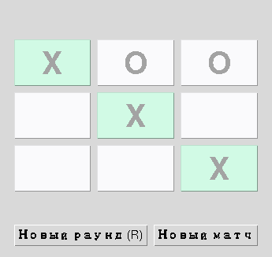

Глава 17 · Интерфейс игры
Подсветка выигрышной линии
Модель уже знает, какие три клетки победили — render() их просто красит.
Данные о линии ведут к подсветке
find_winner(board)
↓
('X', (0, 4, 8))
↓
state.winning_line = (0, 4, 8)
↓
render()
↓
buttons[0], [4], [8] — зелёный фон
podsvetka_linii.py
for index, btn in enumerate(self.buttons):
is_win_cell = state.winning_line is not None and index in state.winning_line
btn.config(bg=WIN_BG if is_win_cell else NEUTRAL_BG)Подсвечиваем ИМЕННО линию — не любые совпавшие символы
Если на поле есть, скажем, четыре «X», но победили только три из них по диагонали — подсвечивается СТРОГО
winning_line, а не каждая клетка с меткой «X». Проверка index in state.winning_line гарантирует это.
Практика: подсветка выигрышной линии
Автоматическая проверка — вычисляем, какие клетки должны подсветиться, на чистых данных